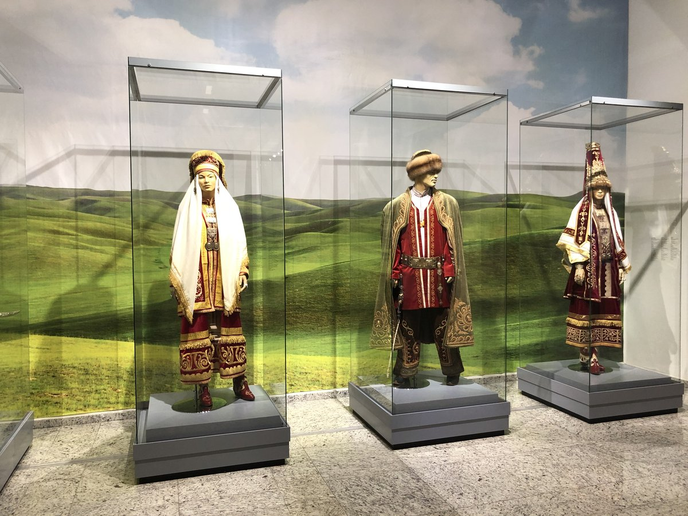
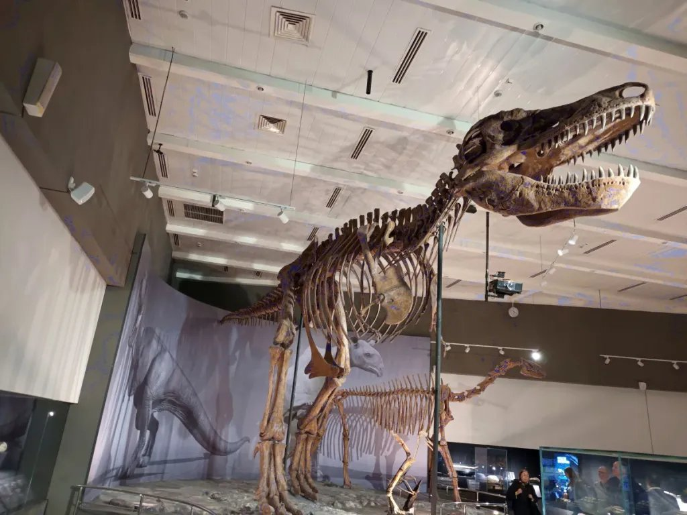
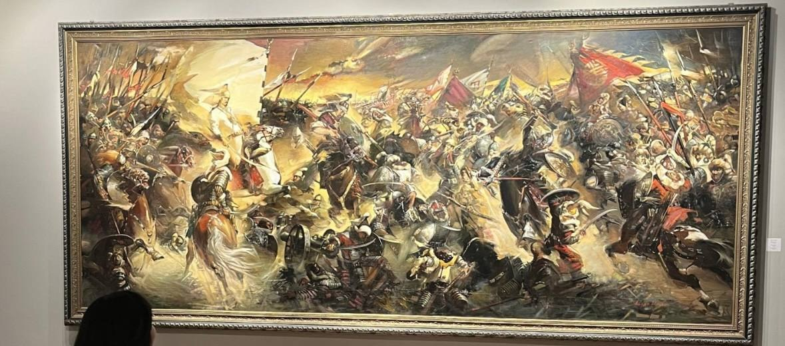
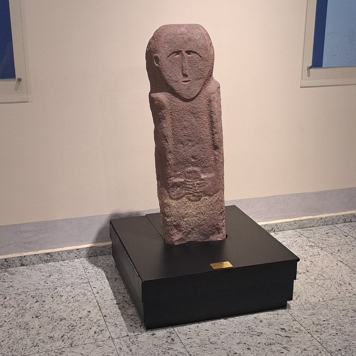

Nomad Art: Textiles of the Steppe
A temporary exhibition of felt carpets, embroidered wall hangings, and woven horse trappings collected from across the country, running for six weeks in the temporary exhibition hall.

The museum runs a rotating calendar of temporary exhibitions, lectures, and hands-on workshops throughout the year. Below are this season’s highlighted events — jump straight to the registration steps if you already know which one you want.
A temporary exhibition of felt carpets, embroidered wall hangings, and woven horse trappings collected from across the country, running for six weeks in the temporary exhibition hall.

A monthly public lecture led by museum researchers, covering recent excavation findings related to Saka burial mounds. Attendance is free with a valid museum ticket for that day.
A day of guided activities designed for children aged 6–12, including a scavenger hunt through the exhibition halls and a hands-on pottery-decorating workshop.
A joint exhibition with the Institute of Geological Sciences, featuring a full-scale mounted skeleton alongside fossils recovered from sites across the country. Included with the standard museum ticket.

A monumental history painting depicting the Battle of Anyrakai (1729–1730), where the united forces of the Kazakh Zhuzes inflicted a decisive defeat on the Dzungar invaders — a turning point still remembered as one of the most significant victories in Kazakh history. The canvas spans an entire gallery wall and is a highlight for visitors interested in military history.

| Program | Day | Time | Duration |
|---|---|---|---|
| Evening Lecture Series | Last Thursday | 18:30 | 1 h |
| Family Discovery Day | First Saturday | 11:00 | 2 h |
| Pottery Workshop | Every Sunday | 13:00 | 1.5 h |

Workshops fill up quickly around public holidays, so early sign-up is strongly recommended. As one parent wrote in our guestbook: my daughter still talks about the pottery workshop months later
.
Visitors consistently rate our programs highly. The average satisfaction score for workshops is 4.8 out of 5.
“The lecture series brought together researchers and the public in a way I hadn’t seen at other museums in the region.”
Nurlan Zhaksybekov, university lecturer, visitor feedback book, April 2026
For group workshop bookings, see the details on the Visiting & Tickets page.